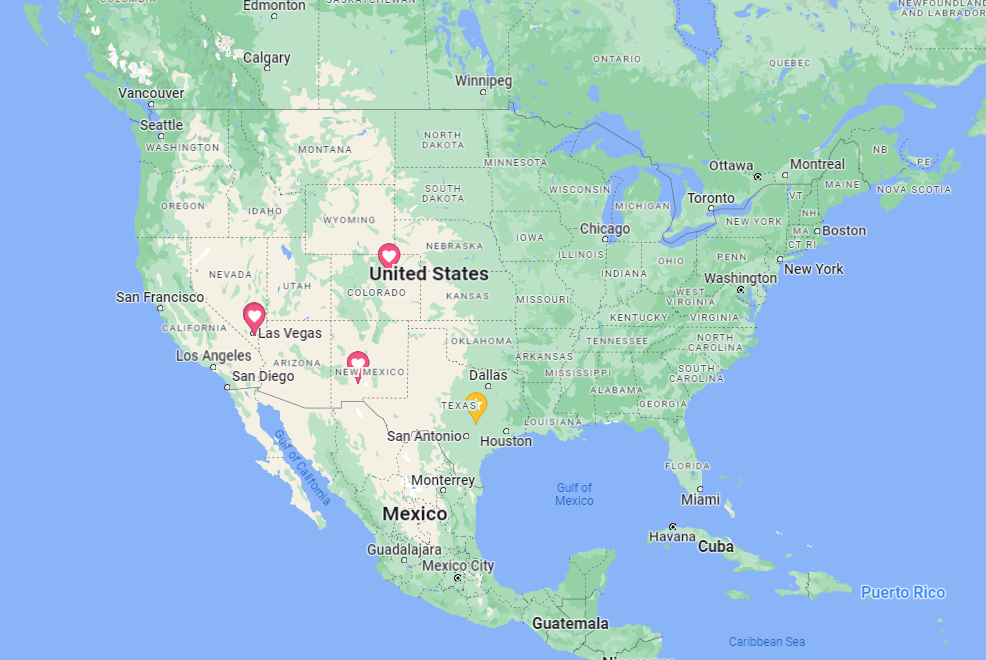

"Imperfection is beauty, madness is genius and it's better to be absolutely ridiculous than absolutely boring."
Marilyn Monroe
American Actress
ABOUT
I am a results-driven and motivated Hardware/Software/Data/IT Engineer with a demonstrated
experience in tools/terminals, improving hardware miniaturization, software performance, testing
and updating existing software and hardware, developing new software functionalities, and data
engineering. Offers a proven track record of extraordinary achievements, strong attention to detail,
and ability to finish projects on schedule and within budget.
11 years ago I became a dedicated entrepreneur for IT at my family foundation, and today I hold 20+ years experience in computing. I show exceptional skills regarding hardware, software, and data. I have assisted many small businesses/companies in developing systems and other applications for their business needs for free
(not for profit). Donations are sometimes presented and accepted. 😀 Along the way I have picked up various extra skills and am a jack of all trades due
to my work. I have improved the workflow for construction and many trades including Carpentry, HVAC,
Plumbing, Automotive as well as Landscaping among other service oriented businesses and organizations
across America from Vegas to D.C.(outside my field (IT)).

As a techie I have developed a practice of learning and utilizing various technologies not limited to:
- Analytics
- Automation
- Artificial intelligence
- Cloud computing
- Communications
- Cybersecurity
- Data/database management
- Infrastructure
- Internet of things
- Machine learning
- Maintenance and repair
- Networks
- Robotics
- Software/application developement
- SCADA
RESUME
MY EMPLOYMENT HISTORY
Entrepreneur / Technologist
The Smart Learning Foundation - Austin, TX
January 2012 to Present
- Learning and developing flows of innovation and creativity while shouldering risk vs. reward in an organized manner; managing client requests with the goal of turning profits in this evolving environment.
- Creating and maintaining operational applications during development, testing, and logging electronic data coming in, or out while integrating software/hardware paradigms.
- scheduling, and planning. balancing business and personal, monitering finances, programming and hacking; failing forward, maturing and mastering my craft.
Team Lead
Nevada System of Higher Education - Paradise, NV
September 2019 to June 2020
- I oversaw a team of student workers and automated a process that backfired because it took away a
job from one of the students. I humbly deleted the program and resigned.
- Experienced in web applications development using Django/Python, .NET/C#, Flask/Python, and
Node.js, Angular.js, ember.js, Jquery, Ajax while using HTML/CSS/JS for server-side rendered application
as a technical lead
- Developed multi-threaded standalone app in Python, Perl, PHP, C++ to view Circuit parameters and
performance.
- Responsible for writing code in Object Oriented Programming supported by Ruby on Rails in Agile
SCRUM environment.
- Written with object-oriented Python, Flask, SQL, Beautiful Soup, httplib2, Jinja2, HTML/CSS, Bootstrap,
jQuery, Linux, Sublime Text, git.
- Full responsibility for SaaS platform with a Ruby on Rails / MySQL technology stack.
- Developed multi-threaded standalone app in Python, Perl, PHP, C++ to view Circuit parameters and
performance.
HVAC Technician / Software Engineer
Trinity Air - New Braunfels, TX
January 2017 to January 2018
- Assisted a Small Business Owner with Commercial HVAC by learning and doing as well as selling and
implementing my software.
- Worked on Node.js Middleware framework like Express.js and Hapi.js and Yoemon, essentially
developed microservices and serve them through middleware. Served any Client side libraries through
microservice.
- Used backend frameworks Nodejs, Koa (Express), Sequelize ORM, GraphQL, MySQL Database and AWS
Stack
- Microservice API development using NodeJS, KOA, Docker, and Kubernetes.
- • Worked on Server frameworks like Express.js, Socket.IO, Koa.js, Hapi JS.
- Worked on full-stack development, with a focus on react/redux on the front-end and nodejs/koa on
the back-end.
- Created a crypto currency wallet and a blockchain based reward engagement platform built with React/
Redux/Sagas, Node/Koa.
- Developed single page applications using React Redux architecture, ES6, web pack and grunt.
Carpenter / Sr. Software/Data Engineer
Bravo Builders - Round Rock, TX
January 2016 to January 2018
- Assisted a Small Business Owner with Commercial Construction by learning and doing as well as selling
and implementing my software.
- Worked on Angular with TypeScript and other latest client-side technologies including ReactJS, ES6, Gulp,
NodeJS, RxJS, Angular CLI, Webpack, Karma and Jasmine.
- Used Node.JS, React.JS, and Backbone.JS MVC framework for developing the Single Page Application
(SPA). Backend development done using Node.js, Koa, Cassandra, and Redis.
- Huge experience working on different Technologies used include VueJS, HTML, SCSS, Cypress, Git,
Tornado, Apollo-GraphQL, SQLAlchemy.
- Integrated Apollo client with GraphQL database for React and React Native for Payment, Dispatch
services.
- Experienced in Design, Development, and Implementation of large-scale projects in Financial, Shipping,
and Retail industries using Data Warehousing ETL tools (Pentaho) and Business Intelligence tools.
- Good exposure to the Data mining tools like SPSS modeler and building Data models using KNN,
clustering, Decision trees, Linear model.
- Installed and configured Pentaho BI Server on different operating systems like Red Hat, Linux, and
Windows Server.
- Experience in creating ETL transformations and jobs using Pentaho Kettle Spoon designer and Pentaho
Data Integration Designer and scheduling them on Pentaho BI Server.
- Writing complex MDX & DAX formula Develop the complex Dashboard by showing %age values.
- Deep knowledge of RDBMS (SQL Server, MySQL, DB2, etc) and NoSQL databases such as MongoDB,
DynamoDB, and Cassandra
MY EDUCATION
The Smart Learning Foundation, Austin
February 2000 to Present
University of Nevada, Las Vegas
August 2019 to June 2020
Highschool diploma, Lehman Highschool, Kyle
August 2010 - June 2014
MY SKILLS
Soft skills
- I have excellent communication skill and confidence in front of an audience; I hold leadership qualities, and am highly motivated in teamwork and creativity
- I have a talent for investigating and researching different processes to offer different improvements and solution for the benefit of the organization
- Provided engaging text, image and video content for all social media and professional accounts
- I am a problem-solver and a critical thinker. very adaptable and resourceful; I take everything with a grain of salt, and am open to criticism.
Technical skills
- I am pretty much considered an intermediate-expert in all things IT due to my early exposure and fascination with technology.
- I have a great experience with MS Office tools, Google Docs tools, and even other open-source suites.
- I am proficient in technical writing.
- Provided engaging text, image and video content for all social media and professional accounts.
Other Technical skills I hold and am not limited to are:
- Data analysis
- Web development
- Systems development
- Computer programming Languages
- Low-voltage electronics development
- Financial management
- Bookkeeping
- UX design
- Graphic design
- Writing
- Cooking
MY HOBBIES AND INTERESTS
- I love to go on walks
- I love mountain hiking and cycling in my free time
- I love to play board/card/video games with other people
- I like to talk and sit, eat food and drink with friends
- I like to write poetry, songs, and jokes
- I like to read fantasy or informative things
- hunting, fishing, and foraging is cool
MY REFERENCES
Tom Snow, Responsible Master Plumber at Balcones Plumbing
- +15124091607
- balconesplumbing@gmail.com
- https://balconesplumbing.com/
Keenen Roland, CEO at Company-X
- +15129924247
- keenenr@gmail.com